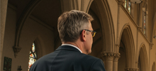

BACKSTAGE
AVer
공연장 PTZ
MD120UI
4K 자동 적외선 PTZ
공연장 방송실에서 사용 시 무대에서 암정 시 상황을 실시간 모니터링할 수 있는 최적의 PTZ 카메라4K 자동 적외선 PTZ
- 4K 해상도
- 자동 적외선
- 실시간 모니터링
- 공연장 방송실 최적화
- 암정 시 상황 모니터링
- 고화질 영상
- 고성능 렌즈
- 보안 기능
- 다양한 설치 옵션
(1안) 4K 자동 적외선 PTZ
공연장 방송실에서 사용 시 무대에서 암정 시 상황을 실시간 모니터링할 수 있는 최적의 PTZ 카메라
(2안) 4K 자동 적외선 PTZ
공연장 방송실에서 사용 시 무대에서 암정 시 상황을 실시간 모니터링할 수 있는 최적의 PTZ 카메라
(3안) 4K 자동 적외선 PTZ
공연장 방송실에서 사용 시 무대에서 암정 시 상황을 실시간 모니터링할 수 있는 최적의 PTZ 카메라
On
OFF
자동 적외선
공연장 샘플 비디오4K 자동 적외선 PTZ
공연장 방송실에서 사용 시 무대에서 암정 시 상황을 실시간 모니터링할 수 있는 최적의 PTZ 카메라4K Sony Sensor

놀라운 화질
4K 해상도(3840x2160)로 선명하고 디테일한 영상을 제공하며, 829만의 유효화소수로 피사체의 미세한 표현이 가능합니다.
고배율, 광학 줌
광학 렌즈를 사용하여 피사체를 확대하여 촬영하는 방식으로, 디지털 줌과 달리 화질 저하 없이 고화질로 멀리 있는 대상을 촬영할 수 있는 기능입니다.
20x
1x
10x
카메라의 위치와 설정 저장
프리셋 설정
팬, 틸트, 줌, 포커스, 아이리스 등을 조정하여 원하는 위치를 프리셋 버튼으로 각 번호에 저장
프리셋 호출
저장한 번호와 프리셋 호출 버튼을 눌러 저장된 위치와 설정을 호출하여 카메라를 이동합니다
프리셋 예시
 1
1 2
2 3
3- 4

프리셋 장점
효율성 향상
미리 설정된 위치로 빠르게 이동하여 카메라 조작 시간을 단축할 수 있습니다.
정확한 촬영반복적인 촬영이나 특정 위치를 놓치지 않고 정확하게 촬영할 수 있습니다.
사용 편의성복잡한 조작 없이 버튼 하나로 원하는 위치를 촬영할 수 있어 편리합니다.
다양한 활용회의실, 강당, 감시 시스템 등 다양한 환경에서 유용하게 활용될 수 있습니다.
편리한 POE 기능
하나의 이더넷 케이블을 통해 컨트롤러 통신과 동시에 장치에 전력까지 공급할 수 있으며 별도의 전원 어댑터 없이 IP 카메라, 컨트롤러, POE 허브등 다양한 네트워크 장치를 설치하고 운영할 수 있어 편리합니다.
복잡한 배선 문제를 해결하고 설치 비용을 절감할 수 있습니다.
구성도
카메라를 원격으로 동시에 조작할 수 있어, 다수의 카메라를 최소인원으로 방송시스템 운영을 원할히 수행 할 수 있습니다.
Block Diagram 예시
다양한 활용도
우수한 퀄리티로 영상 출력이 가능하여 다양한 환경에서 활용도가 높습니다, 4K 혹은 Full HD급의 높은 해상도로 최적의 방송 비디오 영상을 출력하거나 실시간 스트리밍 할 수 있습니다.Reference
추가 설치 옵션
천장 혹은 벽이나 기둥 그리고 트라이포드(삼각대)등에 설치할 수 있는 옵션을 제공합니다.천장 설치
벽 설치
삼각대
기둥 설치
구매 시 TXRX-100 증정
최대 100미터 까지 HDMI 전송
Specifications
AVer MD120UI는 4K 해상도와 자동 적외선 기능을 갖춘 PTZ 카메라로, 공연장 방송실에서 암정 시 상황을 실시간으로 모니터링할 수 있는 최적의 솔루션입니다.| 카메라 | |
|---|---|
| 이미지 센서 | 1/2.8' CMOS |
| 유효 화소 | 8 Megapixels |
| 출력 해상도 | 해상도: 4K / 1080p / 720p 프레임 레이트: 60 / 59.94 / 50 / 30 / 29.97 / 25 |
| 최소 조도 | 0.5 lux (50 IRE, F1.6, Max. AGC, 1/30) |
| S/N Ratio | ≥ 50 dB |
| Gain | 자동, 수동 |
| TV 라인 | 1000 (Center / Wide) |
| 셔터 스피드 | 1/1s to 1/10,000s |
| 노출 조절 | Auto, Manual, Priority AE (Shutter, IRIS), BLC, WDR |
| 화이트 밸런스 | 자동, 수동 |
| 광학 줌 | 20배 |
| 디지털 줌 | 1배 |
| 최대 줌 | 20배 |
| 시야각 | DFOV: 69.2° (Wide) to 4.1° (Tele) HFOV: 62.3° (Wide) to 3.6° (Tele) VFOV: 37.7° (Wide) to 2.1° (Tele) |
| 초점 거리 | f = 4.5 mm (Wide) to 90 mm (Tele) |
| 조리개(Iris) | F = 1.8 (Wide) to 4.7 (Tele) |
| 최소 초점 거리 | 0.1 m (Wide) , 1.2 m (Tele) |
| 팬/틸트 각도 | Pan: ±170°, Tilt: +90° / -30° |
| 팬/틸트 스피드(수동) | Pan: 0.1° to 100° / sec, Tilt: 0.1° to 100° / sec |
| 프리셋 속도 | Pan: 200° / sec, Tilt: 200° / sec |
| 프리셋 수 | 10 (IR), 256 (RS-232, RS-422, IP) |
| 카메라 제어 인터페이스 | RS-232 / RS-422 / 이더넷 |
| 카메라 제어 프로토콜 | VISCA (RS-232 / RS-422 / IP), CGI (IP) |
| 이미지 프로세싱 | 상하 반전, 좌우 반전, 일시 정지, WDR 광역 보정, BLC 역광 보정 |
| 상용 주파수 | 50 Hz, 60 Hz |
| AI 기능 | |
| 모드 | 시선 추적 |
| 프라이버시 | |
| 프라이버시 모드 | 프라이버시 모드, 프라이버시 지시등 |
| 일반 | |
| 작동 전원 | 12V |
| 소비 전력 | 24W |
| PoE | PoE+ (IEEE802.3at) |
| 제품 사이즈 | 180(W) x 145(D) x 183.5(H) mm |
| 제품 무게 | 1.7 ± 0.1 kg |
| 하우징 소재 | 자외선 차단 |
| 사용 환경 | 실내 |
| 적외선(IR) 야간 모드 | 지원 |
| 보안 방식 | 켄싱턴 락 |
| 적외선(IR) 리모컨 | 지원 |
| 작동 환경 | 작동 온도: 0 °C to +40 °C 작동 습도: 20% to 80% |
| 보관 환경 | 보관 온도: -20 °C to +60 °C 보관 습도: 20% to 95% |
| 오디오 | |
| 채널 | 2채널 스테레오 |
| 코덱 | AAC-LC (48K) |
| 내장 마이크 | 1개(무지향성) |
| 인터페이스 | |
| 비디오 출력 | HDMI, IP, USB |
| 오디오 출력 | HDMI, IP, USB |
| 오디오 입력 | N/A |
| IP 스트리밍 | |
| 해상도 | 4K 60fps |
| 네트워크 비디오 압축 포맷 | H.264, H.265, MJPEG |
| 최대 프레임 레이트 | 4K 60fps |
| 비트 레이트 컨트롤 모드 | VBR, CBR |
| 비트 레이트 범위 | 512Kbps to 64Mbps |
| 네트워크 인터페이스 | 10 / 100 / 1000 Base-T |
| 다중 스트림 기능 | 2 (RTSP / Web page), 4K 60fps Max. |
| 네트워크 프로토콜 | IPv6, IPv4, TCP, UDP, ARP, ICMP, IGMP, HTTP, DHCP RTP/RTCP, RTSP, RTMP,VISCA over IP |
| USB | |
| 커넥터 | USB 3.0 (Type-B) |
| 비디오 포맷 | MJPEG |
| 최대 비디오 | 2160p |
| USB Video Class(UVC) | UVC 1.1 |
| USB Audio Class(UAC) | UAC 1.0 |
| Web UI | |
| 라이브 비디오 미리보기 | 지원 |
| 카메라 PTZ 제어 | 팬, 틸트, 줌, 포커스, 프리셋 제어 |
| 카메라 / 이미지 | 노출, 화이트밸런스, 캡처 |
| 네트워크 설정 | DHCP, IP 주소, 게이트웨이, 서브넷 마스크, DNS |
| 소프트웨어 | |
| IP 검색 및 설정 툴 | Windows® 7 이상 지원 |
| ViewCare | Windows® 7 이상 지원 |
| PTZ 컨트롤 패널 | iOS & iPadOS® 11 이상 지원 |
| 카메라 설정 툴 | Windows® 7 이상, macOS® 10.14 이상 지원 |
| 품질 보증 | |
| 카메라 | 3년 |
| 액세서리 | 1년 |
| 패키지 구성품 | |
| 카메라, 드릴링 페이퍼, 천장 마운트 브래킷, QR 코드 카드, 케이블 고정 플레이트, M2 x 4 mm 나사 (x3), 전원 어댑터 & 전원선, 1/4”-20 L=6.5 mm 나사 (x2), 리모컨, M3 x 6 mm 나사 (x3), USB 케이블 (Type-B) | |
| 추가 액세서리 | |
| AVer CL01 PTZ 카메라 컨트롤러, L-Type 벽면 마운트 | |